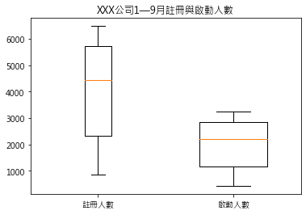

Ch13 數據視覺化¶
數據視覺化是什麼¶
(本節無範例)
資料視覺化的基本流程¶
(本節無範例)
圖表的基本組成元素¶
(本節無範例)
Excel與Python視覺化¶
(本節無範例)
建立畫布和座標系¶
建立畫布¶
#匯入matplotlib函式庫中的pyplot並起別名為plt
import matplotlib.pyplot as plt
#讓圖表直接在Jupyter Notebook中展示出來
%matplotlib inline
#解決中文亂碼問題
plt.rcParams["font.sans-serif"]='Microsoft JhengHei'
#解決負號無法正常顯示的問題
plt.rcParams['axes.unicode_minus'] = False
# %config InlineBackend.figure_format = 'svg'
fig = plt.figure()
<Figure size 432x288 with 0 Axes>
#建立寬為8高為6的畫布
plt.figure(figsize = (8,6))
<Figure size 576x432 with 0 Axes>
<Figure size 576x432 with 0 Axes>
用add_subplot函式建立座標系¶
fig = plt.figure()
ax1 = fig.add_subplot(1,1,1)
fig = plt.figure()
ax1 = fig.add_subplot(2,2,1)
ax2 = fig.add_subplot(2,2,2)
ax3 = fig.add_subplot(2,2,3)
ax4 = fig.add_subplot(2,2,4)
用plt.subplot2grid函式建立座標系¶
plt.subplot2grid((2,2),(0,0))
<matplotlib.axes._subplots.AxesSubplot at 0x2215762e108>
import numpy as np
x = np.arange(6)
y = np.arange(6)
#將圖表的整個區域分成2行2列，且在(0,0)位置做折線圖
plt.subplot2grid((2,2),(0,0))
plt.plot(x,y)
#將圖表的整個區域分成2行2列，且在(0,1)位置做直條圖
plt.subplot2grid((2,2),(0,1))
plt.bar(x,y)
<BarContainer object of 6 artists>
用plt.subplot函式建立座標系¶
plt.subplot(2,2,1)
<matplotlib.axes._subplots.AxesSubplot at 0x221575a6048>

import numpy as np
x = np.arange(6)
y = np.arange(6)
#將圖表的整個區域分成2行2列，且在第1個座標系上做折線圖
plt.subplot(2,2,1)
plt.plot(x,y)
#將圖表的整個區域分成2行2列，且在第4個座標系上做直條圖
plt.subplot(2,2,4)
plt.bar(x,y)
<BarContainer object of 6 artists>
用plt.subplots函式建立座標系¶
fig,axes = plt.subplots(2,2)

fig,axes = plt.subplots(2,2)
import numpy as np
x = np.arange(6)
y = np.arange(6)
#在[0,0]座標系中繪製折線圖
axes[0,0].plot(x,y)
#在[1,1]座標系中繪製柱狀圖
axes[1,1].bar(x,y)
<BarContainer object of 6 artists>
幾種建立座標系方法的區別¶
(本節無範例)
設定座標軸¶
設定座標軸的標題¶
x = np.array([1, 2, 3, 4, 5, 6, 7, 8, 9])
y = np.array([ 866, 2335, 5710, 6482, 6120, 1605, 3813, 4428, 4631])
plt.xlabel("月份",labelpad = 10)
plt.ylabel("註冊人數",labelpad = 10)
plt.plot(x,y)
[<matplotlib.lines.Line2D at 0x221587a2ac8>]
plt.xlabel("月份",fontsize='xx-large',
color = "#70AD47",fontweight = 'bold')
plt.ylabel("註冊人數")
plt.plot(x,y)
[<matplotlib.lines.Line2D at 0x22158811748>]
設定座標軸的刻度¶
#設定x軸刻度
plt.xticks(np.arange(9),["1月份","2月份","3月份", "4月份","5月份","6月份","7月份","8月份","9月份"])
#設定y軸刻度
plt.yticks(np.arange(1000,7000,1000),
["1000人","2000人","3000人","4000人","5000人","6000人"])
plt.plot(x,y)
[<matplotlib.lines.Line2D at 0x2215731b9c8>]
plt.xticks([])
plt.yticks([])
plt.xlabel("月份")
plt.ylabel("註冊人數")
plt.plot(x,y)
[<matplotlib.lines.Line2D at 0x22157428248>]
x = np.array([1, 2, 3, 4, 5, 6, 7, 8, 9])
y = np.array([ 866, 2335, 5710, 6482, 6120, 1605, 3813, 4428, 4631])
#在2×1座標系上的第1個座標系中繪圖
plt.subplot(2,1,1)
plt.plot(x,y)
plt.xlabel("月份")
plt.ylabel("註冊人數")
#軸刻度線設定成雙向且下軸刻度線不顯示
plt.tick_params(axis = "both",
which = "both",
direction = "inout",
bottom = "false"
)
#在2×1座標系上的第2個座標系中繪圖
plt.subplot(2,1,2)
plt.plot(x,y)
plt.xlabel("月份")
plt.ylabel("註冊人數")
#軸刻度線設定成雙向且下軸刻度標籤不顯示
plt.tick_params(axis = "both",
which = "both",
direction = "inout",
labelbottom = "false"
)
設定座標軸的範圍¶
x = np.array([1, 2, 3, 4, 5, 6, 7, 8, 9])
y = np.array([ 866, 2335, 5710, 6482, 6120, 1605, 3813, 4428, 4631])
plt.xlim(0,10)
plt.ylim(0,8000)
plt.plot(x,y)
[<matplotlib.lines.Line2D at 0x221588aa948>]
座標軸的軸顯示設定¶
plt.axis("off")
plt.plot(x,y)
[<matplotlib.lines.Line2D at 0x221588c9d08>]
其他圖表格式的設定¶
格線設定¶
plt.grid(b = "True")
plt.plot(x,y)
[<matplotlib.lines.Line2D at 0x22158938f48>]
plt.grid(b = "True",axis = "x")#只開啟x軸的格線
plt.plot(x,y)
[<matplotlib.lines.Line2D at 0x221589bbf88>]
plt.grid(b = "True",axis = "y")#只開啟y軸的格線
plt.plot(x,y)
[<matplotlib.lines.Line2D at 0x22158a313c8>]
#線型設定成虛線，線寬設定成1
plt.grid(b = "True",linestyle='dashed', linewidth=1)
plt.plot(x,y)
[<matplotlib.lines.Line2D at 0x22158a9fdc8>]
設定圖例¶
plt.plot(x,y,label = "折線圖")
plt.bar(x,y,label = "直條圖")
plt.legend()
plt.plot(x,y)
[<matplotlib.lines.Line2D at 0x22158b40dc8>]
plt.plot(x,y,label = "折線圖")
plt.bar(x,y,label = "直條圖")
plt.legend(loc = "upper left")
plt.legend(loc = 2)
plt.plot(x,y)
[<matplotlib.lines.Line2D at 0x22158bfa188>]
plt.plot(x,y,label = "折線圖")
plt.bar(x,y,label = "直條圖")
plt.legend(ncol = 2)
plt.plot(x,y)
[<matplotlib.lines.Line2D at 0x22153f1bb08>]
圖表標題設定¶
plt.title(label= "1—9月XXX公司註冊用戶數")
plt.plot(x,y)
[<matplotlib.lines.Line2D at 0x2215733e808>]
#圖表標題靠左顯示
plt.title(label= "1—9月XXX公司註冊用戶數",loc = "left")
plt.plot(x,y)
[<matplotlib.lines.Line2D at 0x22158c733c8>]
設定資料標籤¶
plt.title(label= "1—9月XXX公司註冊用戶數")
#在(6,1605)處顯示該點的y值
plt.text(6,1605,1605)
plt.plot(x,y)
[<matplotlib.lines.Line2D at 0x22158ce1708>]
plt.title(label= "1—9月XXX公司註冊用戶數")
#在(x,y)處顯示y值
for a,b in zip(x,y):
plt.text(a,b,b,ha ='center', va ="bottom",fontsize=11)
plt.plot(x,y)
[<matplotlib.lines.Line2D at 0x22158d52588>]
圖表註解¶
plt.title(label= "1—9月XXX公司註冊用戶數")
plt.annotate("伺服器當機了",
xy = (6,1605), xytext = (7,1605),
arrowprops=dict(facecolor='black',arrowstyle = '->'))
plt.plot(x,y)
[<matplotlib.lines.Line2D at 0x22158dccc08>]
資料表¶
#設定x和y值
x = np.array(["東區","北區","南區","西區"])
y1 = np.array([8566,6482,5335,7310])
y2 = np.array([4283,3241,2667,3655])
#繪圖
#直條圖的寬度為0.3
plt.bar(x,y1,width=0.3,label="任務量",color="red")
plt.bar(x,y2,width=0.3,label="完成量",color="yellow")
#設定標題
plt.title("全國各分區任務量和完成量",loc="center")#標題名及標題的位置
# 關閉x軸的名稱顯示
plt.xticks([])
#設定y軸的名稱
plt.ylabel('任務情況')
#圖例設定
plt.legend(loc = "upper center",ncol = 2)
# 設定table函數的相關參數
cellText = [[ 8566, 5335, 7310, 6482],
[4283,2667,3655,3241]]
rows = ["任務量","完成量"]
columns = ["東區","南區","西區","北區"]
# 繪製表格
plt.table(cellText = cellText,
cellLoc='center',
rowLabels=rows,
rowColours = ["red","yellow"],
rowLoc = "center",
colLabels=columns,
colColours = ["red","yellow","red","yellow"],
colLoc='left',
loc='bottom')
<matplotlib.table.Table at 0x22158e50588>
繪製常用圖表¶
繪製折線圖¶
#建立一個座標系
plt.subplot(1,1,1)
#指明x和y值
x = np.array([1, 2, 3, 4, 5, 6, 7, 8, 9])
y = np.array([ 866, 2335, 5710, 6482, 6120, 1605, 3813, 4428, 4631])
#繪圖
plt.plot(x,y,color="k",linestyle="dashdot",
linewidth=1,marker="o",markersize=5,label="註冊用戶數")
#設定標題
#標題名及標題的位置
plt.title("XXX公司1—9月註冊用戶數",loc="center")
#添加資料標籤
for a,b in zip(x,y):
plt.text(a,b,b,ha='center', va= "bottom",fontsize=10)
plt.grid(True)#設定格線
plt.legend()#設定圖例，呼叫顯示出plot中的label值
#儲存圖表
plt.savefig("../plot.png")
繪製直條圖¶
#建立一個座標系
plt.subplot(1,1,1)
#指明x和y值
x = np.array(["東區","北區","南區","西區"])
y = np.array([ 8566, 6482, 5335, 7310])
#繪圖
plt.bar(x,y,width=0.5,align="center",label="任務量")
#設定標題
plt.title("全國各分區任務量",loc="center")
#添加資料標籤
for a,b in zip(x,y):
plt.text(a,b,b,ha='center', va= "bottom",fontsize=12)
#設定x軸和y軸的名稱
plt.xlabel('分區')
plt.ylabel('任務量')
plt.legend()#顯示圖例
#儲存圖表
plt.savefig("../bar.jpg")
#建立一個座標系
plt.subplot(1,1,1)
#指明x和y值
x = np.array([1,2,3,4])
y1 = np.array([8566,5335,7310,6482])
y2 = np.array([4283,2667,3655,3241])
#繪圖
plt.bar(x,y1,width=0.3,label="任務量")#直條圖的寬度為0.3
plt.bar(x+0.3,y2,width=0.3,label="完成量")#x+0.3相當於把完成量的每個柱子右移0.3
#設定標題
plt.title("全國各分區任務量和完成量",loc="center")#標題名及標題的位置
#添加資料標籤
for a,b in zip(x,y1):
plt.text(a,b,b,ha='center', va= "bottom",fontsize=12)
for a,b in zip(x+0.3,y2):
plt.text(a,b,b,ha='center', va= "bottom",fontsize=12)
#設定x軸和y軸的名稱
plt.xlabel('區域')
plt.ylabel('任務情況')
#設定x軸刻度值
plt.xticks(x+0.15,["東區","南區","西區","北區"])
plt.grid(False)#設定格線
plt.legend()#圖例設定
#儲存圖表
plt.savefig("../bar.jpg")
#建立一個座標系
plt.subplot(1,1,1)
#指明x和y值
x = np.array(["東區","北區","南區","西區"])
y1 = np.array([8566,6482,5335,7310])
y2 = np.array([4283,3241,2667,3655])
#繪圖
#直條圖的寬度為0.3
plt.bar(x,y1,width=0.3,label="任務量")
plt.bar(x,y2,width=0.3,label="完成量")
#設定標題
plt.title("全國各分區任務量和完成量",loc="center")#標題名及標題的位置
#添加資料標籤
for a,b in zip(x,y1):
plt.text(a,b,b,ha='center', va= "bottom",fontsize=12)
for a,b in zip(x,y2):
plt.text(a,b,b,ha='center', va= "top",fontsize=12)
#設定x軸和y軸的名稱
plt.xlabel('區域')
plt.ylabel('任務情況')
plt.grid(False)#設定格線
#圖例設定
plt.legend(loc = "upper center",ncol = 2)
#儲存圖表
plt.savefig("../bar.jpg")
繪製橫條圖¶
#建立一個座標系
plt.subplot(1,1,1)
#指明x和y值
x = np.array(["東區","北區","南區","西區"])
y = np.array([ 8566, 6482, 5335, 7310])
#繪圖
#width指明橫條圖的寬度，align指明橫條圖的位置，還可以選edge，預設是center
plt.barh(x,height=0.5,width=y,align="center")
#設定標題
plt.title("全國各分區任務量",loc="center")
#添加資料標籤
for a,b in zip(x,y):
plt.text(b,a,b,ha='center', va= "center",fontsize=12)
#設定x軸和y軸的名稱
plt.ylabel('區域')
plt.xlabel('任務量')
plt.grid(False)#設定格線
#儲存圖表
plt.savefig("../barh.jpg")
繪製散點圖¶
#建立一個座標系
plt.subplot(1,1,1)
#指明x和y值
x = [5.5,6.6,8.1,15.8,19.5,22.4,28.3,28.9]
y = [2.38,3.85,4.41,5.67,5.44,6.03,8.15,6.87]
#繪圖
plt.scatter(x,y,marker="o",s=100)
#設定標題
plt.title("1—8月平均氣溫與啤酒銷量關係圖",loc="center")
#設定x軸和y軸名稱
plt.xlabel('平均氣溫')
plt.ylabel('啤酒銷量')
plt.grid(False)#設定格線
#儲存圖表
plt.savefig("../scatter.jpg")
繪製氣泡圖¶
#建立一個座標系
plt.subplot(1,1,1)
#指明x和y值
x = np.array([5.5,6.6,8.1,15.8,19.5,22.4,28.3,28.9])
y = np.array([2.38,3.85,4.41,5.67,5.44,6.03,8.15,6.87])
#繪圖
colors = y*10#根據y值的大小產生不同的顏色
area = y*100#根據y值的大小產生大小不同的形狀
plt.scatter(x,y,c = colors,marker = "o",s = area)
#設定標題
plt.title("1—8月平均氣溫與啤酒銷量關係圖",loc="center")
#添加資料標籤
for a,b in zip(x,y):
plt.text(a,b,b,ha='center', va= "center",fontsize=10,color = "white")
#設定x軸和y軸的名稱
plt.xlabel('平均氣溫')
plt.ylabel('啤酒銷量')
plt.grid(False)#設定格線
#儲存圖表
plt.savefig("../scatter.jpg")
繪製面積圖¶
#建立一個座標系
plt.subplot(1,1,1)
#指明x和y的值
x = np.array([1, 2, 3, 4, 5, 6, 7, 8, 9])
y1 = np.array([ 866, 2335, 5710, 6482, 6120, 1605, 3813, 4428, 4631])
y2 = np.array([ 433, 1167, 2855, 3241, 3060, 802, 1906, 2214, 2315])
#繪圖
labels = ["註冊人數 ", "啟動人數"] #指明系列標籤
plt.stackplot(x,y1,y2,labels=labels)
#設定標題
plt.title("XXX公司1—9月註冊與啟動人數",loc="center")
#設定x軸和y軸名稱
plt.xlabel('月份')
plt.ylabel('註冊與啟動人數')
plt.grid(False)#設定格線
plt.legend()
#儲存圖表
plt.savefig("../stackplot.jpg")
繪製樹地圖¶
import squarify
#指定每一塊的大小
size = np.array([3.4,0.693,0.585,0.570,0.562,0.531,
0.530,0.524,0.501,0.478,0.468,0.436])
#指定每一塊的文字標籤
xingzuo = np.array(["未知","摩羯座","天秤座","雙魚座","天蠍座","金牛座","處女座","雙子座","射手座","獅子座","水瓶座","白羊座"])
#指定每一塊的數值標籤
rate = np.array(["34%","6.93%","5.85%","5.70%","5.62%","5.31%",
"5.30%","5.24%","5.01%","4.78%","4.68%","4.36%"])
#指定每一塊的顏色
colors = ['steelblue','#9999ff','red','indianred',
'green','yellow','orange']
#繪圖
plot = squarify.plot(sizes = size,
label = xingzuo,
color = colors,
value = rate,
edgecolor = 'white',
linewidth =3
)
# 設定標題大小
plt.title('菊粉星座分佈',fontdict = {'fontsize':12})
# 去除座標軸
plt.axis('off')
# 去除上邊框和右邊框的刻度
plt.tick_params(top = 'off', right = 'off')
#指定圖表儲存路徑
plt.savefig("../squarify.jpg")
繪製雷達圖¶
#建立座標系
plt.subplot(111,polar = True)#參數polar等於True表示建立一個極座標系
dataLenth = 5#把整個圓均分成5份
#np.linspace表示在指定的間隔內傳回均勻間隔的數字
angles = np.linspace(0,2*np.pi,dataLenth,endpoint=False)
labels = ['溝通能力','業務理解能力','邏輯思維能力',
'快速學習能力','工具使用能力']
data = [2,3.5,4,4.5,5]
data = np.concatenate((data, [data[0]])) # 閉合
angles = np.concatenate((angles, [angles[0]])) # 閉合
#繪圖
plt.polar(angles,data,color = "r",marker = "o")
#設定x軸刻度
plt.xticks(angles,labels)
#設定標題
plt.title(label = "某資料分析師的綜合評級")
#儲存圖表
plt.savefig("../polarplot.jpg")
data
array([2. , 3.5, 4. , 4.5, 5. , 2. ])
angles
array([0. , 1.25663706, 2.51327412, 3.76991118, 5.02654825,
0. ])
繪製箱形圖¶
#建立一個座標系
plt.subplot(1,1,1)
#指明x值
y1 = np.array([ 866, 2335, 5710, 6482, 6120, 1605, 3813, 4428, 4631])
y2 = np.array([ 433, 1167, 2855, 3241, 3060, 802, 1906, 2214, 2315])
x = [y1,y2]
#繪圖
labels=["註冊人數","啟動人數"]
plt.boxplot(x,labels=labels,vert=True,widths = [0.2,0.5])
#設定標題
plt.title("XXX公司1—9月註冊與啟動人數",loc="center")
plt.grid(False)#設定格線
#儲存圖表
plt.savefig("../boxplot.jpg")

繪製圓形圖¶
#建立一個座標系
plt.subplot(1,1,1)
#指明x值
x = np.array([ 8566, 5335, 7310, 6482])
labels=["東區","北區","南區","西區"]
explode=[0.05,0,0,0]#讓第一塊離圓心遠一點
labeldistance=1.1
plt.pie(x,labels=labels,autopct='%.0f%%',shadow=True,
explode=explode,radius=1.0,labeldistance=labeldistance)
#設定標題
plt.title("全國各區域任務量占比",loc="center")
#指定圖表儲存路徑
plt.savefig("../pie.jpg")
繪製圓環圖¶
#建立座標系
plt.subplot(1,1,1)
#指明x值
x1 = np.array([ 8566, 5335, 7310, 6482])
x2 = np.array([4283,2667,3655,3241])
#繪圖
labels = ["東區","北區","南區","西區"]
plt.pie(x1,labels=labels,radius=1.0,
wedgeprops=dict(width=0.3, edgecolor='w'))
plt.pie(x2,radius=0.7,wedgeprops=dict(width=0.3, edgecolor='w'))
#添加註解
plt.annotate("完成量",
xy = (0.35,0.35),xytext = (0.7,0.45),
arrowprops=dict(facecolor='black',arrowstyle = '->'))
plt.annotate("任務量",
xy = (0.75,0.20),xytext = (1.1,0.2),
arrowprops=dict(facecolor='black',arrowstyle = '->'))
#設定標題
#標題名及標題的位置
plt.title("全國各區域任務量與完成量占比",loc="center")
#儲存圖表
plt.savefig("../pie.jpg")
繪製熱力圖¶
import itertools
#幾個相關指標之間的相關性
cm = np.array([[1,0.082,0.031,-0.0086],
[0.082,1,-0.063,0.062],
[0.031,-0.09,1,0.026],
[-0.0086,0.062,0.026,1]])
cmap=plt.cm.cool#設定配色方案
plt.imshow(cm,cmap = cmap)
plt.colorbar()#顯示右邊的顏色條
#設定x軸和y軸的刻度標籤
classes=["負債率","信貸數量","年齡","家屬數量"]
tick_marks = np.arange(len(classes))
plt.xticks(tick_marks,classes)
plt.yticks(tick_marks,classes)
#將數值顯示在指定位置
for i, j in itertools.product(range(cm.shape[0]), range(cm.shape[1])):
plt.text(j, i,cm[i, j],horizontalalignment="center")
plt.grid(False)#設定格線
#儲存圖表
plt.savefig("../imshow.jpg")
繪製水平線和垂直線¶
#建立座標系
plt.subplot(1,2,1)
#繪製一條y等於2且起點是0.2，終點是0.6的水平線
plt.axhline(y = 2,xmin = 0.2,xmax = 0.6)
plt.subplot(1,2,2)
#繪製一條x等於2且起點是0.2，終點是0.6的垂直線
plt.axvline(x = 2,ymin = 0.2,ymax = 0.6)
<matplotlib.lines.Line2D at 0x2215a43e288>
繪製組合圖表¶
折線圖+折線圖¶
#建立一個座標軸
plt.subplot(1,1,1)
#指明x和y的值
x = np.array([1, 2, 3, 4, 5, 6, 7, 8, 9])
y1 = np.array([ 866, 2335, 5710, 6482, 6120, 1605, 3813, 4428, 4631])
y2 = np.array([ 433, 1167, 2855, 3241, 3060, 802, 1906, 2214, 2315])
#直接繪製兩條折線
plt.plot(x,y1,color="k",linestyle="solid",linewidth=1, marker="o",markersize=3,label="註冊人數")
plt.plot(x,y2,color="k",linestyle="dashdot",linewidth=1, marker="o",markersize=3,label="啟動人數")
#設定標題
#標題名及標題的位置
plt.title("XXX公司1—9月註冊與啟動人數",loc="center")
#添加資料標籤
for a,b in zip(x,y1):
plt.text(a,b,b,ha='center', va= "bottom",fontsize=11)
for a,b in zip(x,y2):
plt.text(a,b,b,ha='center', va= "bottom",fontsize=11)
#設定x軸和y軸的名稱
plt.xlabel('月份')
plt.ylabel('註冊量')
#設定x軸和y軸的刻度
plt.xticks(np.arange(1,10,1),["1月份","2月份","3月份",
"4月份","5月份","6月份","7月份","8月份","9月份"])
plt.yticks(np.arange(1000,7000,1000),
["1000人","2000人","3000人","4000人","5000人","6000人"])
plt.legend()#設定圖例
#儲存圖表
plt.savefig(r"..\plot2.jpg")
折線圖+直條圖¶
#建立一個座標軸
plt.subplot(1,1,1)
#指明x和y的值
x = np.array([1, 2, 3, 4, 5, 6, 7, 8, 9])
y1 = np.array([ 866, 2335, 5710, 6482, 6120, 1605, 3813, 4428, 4631])
y2 = np.array([ 433, 1167, 2855, 3241, 3060, 802, 1906, 2214, 2315])
#直接繪製折線圖和直條圖
plt.plot(x,y1,color="k",linestyle="solid",linewidth=1,
marker="o",markersize=3,label="註冊人數")
plt.bar(x,y2,color="k",label="啟動人數")
#設定標題
#標題名及標題的位置
plt.title("XXX公司1—9月註冊與啟動人數",loc="center")
#添加資料標籤
for a,b in zip(x,y1):
plt.text(a,b,b,ha='center', va= "bottom",fontsize=11)
for a,b in zip(x,y2):
plt.text(a,b,b,ha='center', va= "bottom",fontsize=11)
#設定x軸和y軸的名稱
plt.xlabel('月份')
plt.ylabel('註冊量')
#設定x軸和y軸的刻度
plt.xticks(np.arange(1,10,1),["1月份","2月份","3月份",
"4月份","5月份","6月份","7月份","8月份","9月份"])
plt.yticks(np.arange(1000,7000,1000),
["1000人","2000人","3000人","4000人","5000人","6000人"])
plt.legend()#設定圖例
#儲存圖表
plt.savefig(r"..\bar2.jpg")
繪製雙座標軸圖表¶
繪製雙y軸圖表¶
#建立一個座標軸
plt.subplot(1,1,1)
#指明x和y的值
x = np.array([1,2,3,4,5,6,7,8,9])
y1 = np.array([ 866, 2335, 5710, 6482, 6120, 1605, 3813, 4428, 4631])
y2 = np.array([0.54459448, 0.32392354, 0.39002751,
0.41121879, 0.32063077, 0.33152276,
0.92226226, 0.02950071, 0.15716906])
#繪製主座標軸上的圖表
plt.plot(x,y1,
color="k",
linestyle="solid",
linewidth=1,
marker="o",
markersize=3,
label="註冊人數")
#設定主x軸和y軸的名稱
plt.xlabel('月份')
plt.ylabel('註冊量')
#設定主座標軸圖表的圖例
plt.legend(loc = "upper left")
#呼叫twinx方法
plt.twinx()
#繪製次座標軸的圖表
plt.plot(x,y2,
color="k",
linestyle="dashdot",
linewidth=1,
marker="o",
markersize=3,
label="啟動率")
# plt.bar(x, y2)
#設定次x軸和y軸的名稱
plt.xlabel('月份')
plt.ylabel('啟動率')
#設定次座標軸圖表的圖例
plt.legend()
#設定標題
#標題名以及標題的位置
plt.title("XXX公司1—9月註冊量與啟動率",
loc="center")
#儲存圖表
plt.savefig(r"..\twinx.jpg")
#建立一個座標軸
# fig, ax = plt.subplots(1,1)
#指明x和y的值
x = np.array([1,2,3,4,5,6,7,8,9])
y1 = np.array([ 866, 2335, 5710, 6482, 6120, 1605, 3813, 4428, 4631])
y2 = np.array([0.54459448, 0.32392354, 0.39002751,
0.41121879, 0.32063077, 0.33152276,
0.92226226, 0.02950071, 0.15716906])
# x = np.linspace(0, 10, 101)
fig, ax = plt.subplots(1, 1)
ax.plot(x, y1)
ax.set_ylim(0,10000)
ax2 = ax.twinx()
ax2.bar(x, y2, color='orange', width=1, edgecolor='k')
ax2.set_ylim(0,2)
ax2.invert_yaxis()
#繪製主座標軸上的圖表
ax.plot(x,y1,
color="k",
linestyle="solid",
linewidth=1,
marker="o",
markersize=3,
label="註冊人數")
#設定主x軸和y軸的名稱
# ax.xlabel('月份')
# ax.ylabel('註冊量')
#設定主座標軸圖表的圖例
# ax.legend(loc = "upper left")
#呼叫twinx方法
ax.twinx()
#繪製次座標軸的圖表
ax.plot(x,y2,
color="k",
linestyle="dashdot",
linewidth=1,
marker="o",
markersize=3,
label="啟動率")
# ax.bar(x, y2)
ax.invert_yaxis()
ax.set_ylim([0,1])
#設定次x軸和y軸的名稱
# ax.xlabel('月份')
# ax.ylabel('啟動率')
#設定次座標軸圖表的圖例
# ax.legend()
#設定標題
#標題名以及標題的位置
# ax.title("XXX公司1—9月註冊量與啟動率",
# loc="center")
#儲存圖表
# ax.savefig(r"..\twinx.jpg")
(0, 1)
Reference¶
import numpy as np
import matplotlib.pyplot as plt
x=np.linspace(-3,3,100)
y=3*x+4
fig, (ax1, ax2) = plt.subplots(1, 2)
ax1.plot(x, y)
ax1.set_title("Normal Plot")
ax2.plot(x, y)
ax2.set_title("Reverted axes")
# ax2.invert_xaxis()
ax2.invert_yaxis()
fig.tight_layout()
plt.show()
print('Done!')
Done!